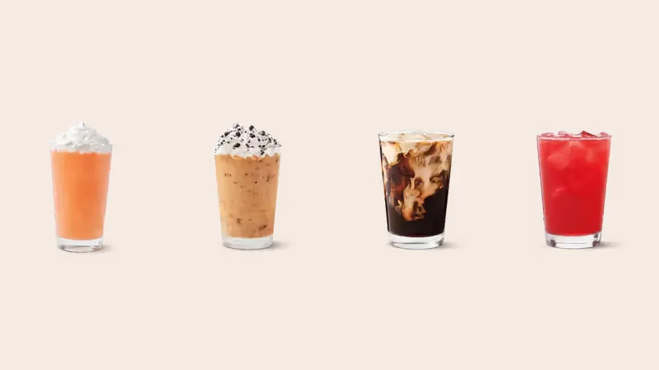

Unofficial fan guide - not affiliated with Tim Hortons
Summer drinks arrive in early April. See the 2026 lineup, the drinks that keep returning and what to expect next year.
Full Menu / Blog / Tim Hortons Summer Drinks

Tim Hortons usually launches its Canadian spring and summer cold drinks in early April: April 5 in 2023, around April 9 in 2025 and April 2 in 2026. The 2026 lineup centred on Protein Quenchers, Caramel Churro drinks and a Zero Sugar Sparkling Quencher.
The cold-drink lineup arrives in early April, well before summer starts. The dates below come from Canadian coverage and Tim Hortons' own releases; we did not check 2024.
| Year | Launch or first coverage | Headline new drinks |
|---|---|---|
| 2023 | April 5, 2023 | OREO Double Stuf Iced Capp, OREO Strawberry Creamy Chill, Caramel Toffee Cold Brew |
| 2025 | April 9, 2025 (first coverage) | Frozen Quenchers, OREO Mocha Iced Capp, Toasted Marshmallow Cold Brew |
| 2026 | April 2, 2026 (release date) | Protein Quenchers, Raspberry Mojito Zero Sugar Sparkling Quencher, Caramel Churro lineup |
In 2026 a second wave followed in June: on June 18, Tim Hortons announced its summer menu, and the matcha lineup arrived on July 22.
The 2026 lineup had five new drink families, announced across three dates: April 2, June 18 and July 22.
Protein Quenchers are creamy, fruity drinks made with a lactose-free, high-protein dairy beverage, with 14 grams of protein per medium. They come in five flavours: Blackberry Yuzu, Orange Tangerine, Peach, Strawberry Watermelon and Raspberry Mojito.
It is a sparkling drink with a tangy raspberry mojito flavour, served over ice with a dried slice of lime, and it contains zero sugar. Matthew Feaver, Tim Hortons' Head of Innovation, called it "proof that you can have a beverage that's vibrant, refreshing, and delicious – while being zero-sugar."
The Caramel Churro lineup has an Iced Latte, a Cold Brew and an Iced Capp, each blended with or topped with churro cookie crumbs. The OREO DOUBLE STUF Iced Capp returned, made with OREO cookie crumble, vanilla syrup and vanilla-flavoured whipped topping.
Poppin' Frozen Quenchers, announced June 18, 2026, add popping candies blended through the drink and sprinkled on top. They come in five fruit flavours and are described as "refreshingly icy and creamy."
On July 22, 2026, Tim Hortons added five matcha drinks: Vanilla Iced Matcha Latte with Cold Foam, Original Iced Matcha Latte, Unsweetened Iced Matcha Latte, Hot Vanilla Matcha Latte and Hot Matcha Latte. They use 100% pure matcha made from shade-grown tea leaves. Strawberry Matcha joined on September 23.
The OREO DOUBLE STUF Iced Capp has appeared in the 2023, 2025 and 2026 lineups, which makes it the most reliable returner we found. Fruit Quenchers also recur: Peach and Strawberry Watermelon appear in 2023 coverage, and Orange Tangerine, Blackberry Yuzu, Peach and Strawberry Watermelon appear in 2025 and 2026 flavour lists.
| Drink | 2023 | 2025 | 2026 |
|---|---|---|---|
| OREO DOUBLE STUF Iced Capp | New | Returning | Returning |
| Peach Quencher | Yes | Yes | Yes (Protein Quencher) |
| Strawberry Watermelon Quencher | Yes | Yes | Yes (Protein Quencher) |
| Orange Tangerine Quencher | Not listed | Yes | Yes (Protein Quencher) |
| Blackberry Yuzu Quencher | Not listed | Yes | Yes (Protein Quencher) |
| New cold brew flavour | Caramel Toffee | Toasted Marshmallow | Caramel Churro |
A new cold brew flavour appeared in each of the three years. Toasted Marshmallow Cold Brew is steeped for 16 hours, according to Tim Hortons' 2025 coverage, and is not in the 2026 release.
In 2026, the June 18 summer menu came with two deals at participating Canadian restaurants: two medium original Iced Capps for $6 on Mondays, and a daily happy hour from 2 p.m. to 8 p.m. with a medium Iced Latte or flavoured Cold Brew for $3. Both were limited time, so confirm in the Tims App whether they return in 2027.
The Raspberry Mojito Zero Sugar Sparkling Quencher is the zero-sugar option. The Protein Quenchers are the high-protein option, with 14 grams of protein per medium. Tim Hortons does not publish sugar or protein figures for every cold drink in its releases, so check Tim Hortons' nutrition information for a specific drink. For other cold drinks, see our best Tim Hortons drinks and coffee menu.
Expect an early-April launch, a collaboration-style Iced Capp, a new cold brew flavour and refreshed Quencher flavours. This is a pattern from the past three lineups we checked, not an announcement. In each of 2023, 2025 and 2026, Tim Hortons introduced at least one new cold brew flavour and kept OREO in the Iced Capp lineup. We will update this page when Tim Hortons confirms the 2027 menu.
In Canada, the spring and summer cold-drink lineup has launched in early April: April 5 in 2023, around April 9 in 2025 and April 2 in 2026. A second summer menu followed on June 18 in 2026.
The 2026 lineup included Protein Quenchers, the Raspberry Mojito Zero Sugar Sparkling Quencher, the Caramel Churro Iced Latte, Cold Brew and Iced Capp, and Poppin' Frozen Quenchers. Matcha lattes followed on July 22.
Tim Hortons has announced new Quenchers with its spring and summer lineups in 2023, 2025 and 2026. We did not find a statement on whether specific flavours are available year-round, so check your restaurant.
Yes. The Raspberry Mojito Zero Sugar Sparkling Quencher launched on April 2, 2026, with zero sugar and a dried lime garnish.
A medium Protein Quencher has 14 grams of protein. They are made with a lactose-free, high-protein dairy beverage.
In summer 2026, Tim Hortons ran a daily happy hour from 2 p.m. to 8 p.m. with a medium Iced Latte or flavoured Cold Brew for $3 at participating Canadian restaurants. It was limited time, so check the Tims App for 2027.
It has been on the cold menu in 2023, 2025 and 2026, so a return is plausible, but Tim Hortons has not confirmed 2027. Check the Tims App when the lineup is announced.
The Caramel Churro Iced Latte, Cold Brew and Iced Capp combine caramel and cinnamon flavours and are topped with churro cookie crumbs.
It was part of the 2025 lineup and is steeped for 16 hours. It is not in the 2026 release, so it is not guaranteed to be on the menu.
Not necessarily. Drinks are offered at participating restaurants, and franchise owners set their own prices.
No. The U.S. has used different names, such as Refreshers, for its fruit drinks, while the Canadian lineup centres on Quenchers. Check which country a menu article covers before you rely on it.
This is an independent, unofficial guide. It is not affiliated with, endorsed by, or sponsored by Tim Hortons or Restaurant Brands International. Launch dates come from Canadian coverage and Tim Hortons' own releases for 2023, 2025 and 2026 (we did not check 2024). The 2027 outlook is a pattern, not an announcement. See Sources.